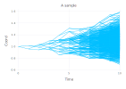
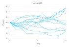

Plotting Sample
InvariantStopping.plot — Methodplot(::Sample)Plot a sample with the x-axis representing time and the y-axis representing the first coordinate.
Examples:
state = State(0.0,(1.0,))
binary_tree = Schedule(LinRange(0,10,11),2)
underlying_model = GeometricBrownianMotion(0.01,0.05,0.0)
sample = Sample(state, tree, underlying_model)
plot(sample)
state = State(0.0,(1.0,))
star = Star(LinRange(0,10,11),12)
underlying_model = GeometricBrownianMotion(0.01,0.05,0.0)
sample = Sample(state, star, underlying_model)
plot(sample)
InvariantStopping.plot — Methodplot(::Any, ::NodeSample)A helper function for recursively plotting trajectories.